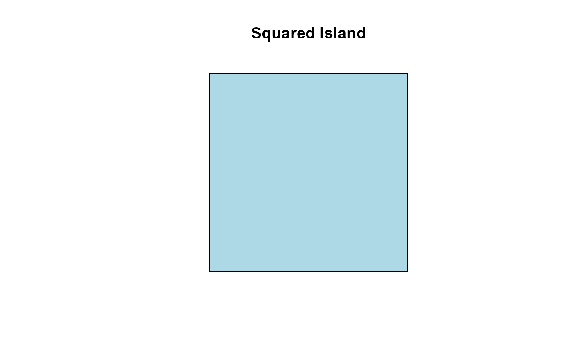
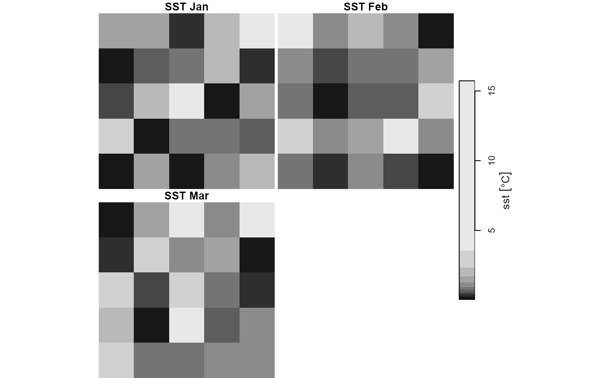

Create a <Driver> object
Driver.RdHelper function to construct instances of <Driver> objects
Arguments
- id
character string, a unique identifier for the driver.
- type
character string, the driver type within the context of the IBM. Currently supports 3 options: "habitat" (default), "impact" or "model" (see <
Driver>).- descr
character string, providing a general description of the driver.
- ann
character string, annotation for referencing the driver for reporting purposes.
- sf_obj
object of class
<sf>, the simple feature representing the spatial geometry of the driver, if applicable.- sf_descr
character string, a brief description of data contained in
sf_obj.- stars_obj
an object of class
<stars>, a multidimensional array of grid-type spatio-temporal attributes of the driver (e.g. time-series of prey-density surfaces, SST, distance surfaces to landscape features or to man-made structures/impacts). The<stars>object must follow a specific structure to be compatible with the model - see the Details section below for formatting requirements.- stars_descr
character string, providing a brief description of the data contained in
stars_obj.- obj_active
character string, flagging whether
sf_objorstars_objis to be used as the active driver data during simulation.
stars_obj formatting requirements
The <stars> object provided to the stars_obj argument must meet the
following structural requirements:
Must contain a single attribute, with values mapped to a valid unit of measurement.
Must include two raster dimensions, comprising the spatial grid-type properties of the data.
May include one temporal dimension representing the temporal resolution or aggregation of the data. When present:
if dimension values are of type
<character>, they are assumed to represent months and must match valid English month names or abbreviations (see month.name and month.abb).if dimension values are of type
<numeric>, the dimension must be named as one of the following its values must conform to the specified ranges:"month": integer values from 1 to 12;"year": 4-digit integers (e.g., 1998, 2024);"quarter": integers from 1 to 4;"yearweek": integers from 1 to 52 or 53;"yearday": integers from 1 to 365 or 366.
May include one iteration-type dimension, typically used to represent replicate draws from bootstrap sampling or stochastic simulations. This dimension must:
Contain integer values;
Be named
"iter","boot", or"sample"
The full data cube must not exceed four dimensions in total: two raster dimensions and up to two non-raster dimensions (temporal and/or iterative).
Examples
library(sf)
#> Warning: package 'sf' was built under R version 4.4.3
#> Linking to GEOS 3.13.0, GDAL 3.10.1, PROJ 9.5.1; sf_use_s2() is TRUE
library(stars)
#> Warning: package 'stars' was built under R version 4.4.3
#> Loading required package: abind
# mocked-up driver defined by an <sf> object
(d <- Driver(
id = "isl",
type = "habitat",
descr = "A pit-stop island",
ann = "Squared Island",
sf_obj = st_sf(geom = st_sfc(st_polygon(list(matrix(c(0,0,10,0,10,10,0, 10,0,0), ncol=2, byrow=TRUE))))),
sf_descr = "coastline",
obj_active = "sf"
))
#> An object of class "Driver"
#> Slot "id":
#> [1] "isl"
#>
#> Slot "type":
#> [1] "habitat"
#>
#> Slot "descr":
#> [1] "A pit-stop island"
#>
#> Slot "ann":
#> [1] "Squared Island"
#>
#> Slot "sf_obj":
#> Simple feature collection with 1 feature and 0 fields
#> Geometry type: POLYGON
#> Dimension: XY
#> Bounding box: xmin: 0 ymin: 0 xmax: 10 ymax: 10
#> CRS: NA
#> geom
#> 1 POLYGON ((0 0, 10 0, 10 10,...
#>
#> Slot "sf_descr":
#> [1] "coastline"
#>
#> Slot "stars_obj":
#> stars object with 2 dimensions and 1 attribute
#> attribute(s):
#> A1
#> Mode:logical
#> NA's:1
#> dimension(s):
#> from to point values
#> X1 1 1 FALSE [0,NA)
#> X2 1 1 FALSE [0,NA)
#>
#> Slot "stars_meta":
#> list()
#>
#> Slot "stars_descr":
#> [1] NA
#>
#> Slot "obj_active":
#> [1] "sf"
#>
plot(d@sf_obj, main = d@ann, col = "lightblue")

# mocked-up driver defined by a raster-type <start> object
sst <- array(rlnorm(5*5*3*10), dim = c(5, 5, 3, 10)) |>
st_as_stars() |>
st_set_dimensions(3, names = "month", values = month.abb[1:3]) |>
st_set_dimensions(4, names = "iter") |>
setNames("sst") |>
dplyr::mutate(sst = units::set_units(sst, "degree_Celsius"))
(s <- Driver(
id = "sst",
type = "habitat",
descr = "Sea Surface Temperature",
ann = "SST",
stars_obj = sst,
obj_active = "stars"
))
#> An object of class "Driver"
#> Slot "id":
#> [1] "sst"
#>
#> Slot "type":
#> [1] "habitat"
#>
#> Slot "descr":
#> [1] "Sea Surface Temperature"
#>
#> Slot "ann":
#> [1] "SST"
#>
#> Slot "sf_obj":
#> Simple feature collection with 1 feature and 0 fields (with 1 geometry empty)
#> Geometry type: POLYGON
#> Dimension: XY
#> Bounding box: xmin: NA ymin: NA xmax: NA ymax: NA
#> CRS: NA
#> geometry
#> 1 POLYGON EMPTY
#>
#> Slot "sf_descr":
#> [1] NA
#>
#> Slot "stars_obj":
#> stars object with 4 dimensions and 1 attribute
#> attribute(s):
#> Min. 1st Qu. Median Mean 3rd Qu. Max.
#> sst [°C] 0.05291981 0.4974186 0.9718587 1.641775 1.923237 15.72761
#> dimension(s):
#> from to offset delta point values x/y
#> X1 1 5 0 1 FALSE NULL [x]
#> X2 1 5 0 1 FALSE NULL [y]
#> month 1 3 NA NA FALSE Jan, Feb, Mar
#> iter 1 10 0 1 FALSE NULL
#>
#> Slot "stars_meta":
#> $raster
#> $raster$dims
#> [1] 1 2
#>
#> $raster$names
#> [1] "X1" "X2"
#>
#>
#> $non_raster
#> $non_raster$dims
#> [1] 3 4
#>
#> $non_raster$names
#> [1] "month" "iter"
#>
#> $non_raster$types
#> [1] "temporal" "iteration"
#>
#> $non_raster$procs
#> [1] "month_chr" "draw"
#>
#> $non_raster$cls
#> [1] "character" "numeric"
#>
#>
#>
#> Slot "stars_descr":
#> [1] NA
#>
#> Slot "obj_active":
#> [1] "stars"
#>
plot(s@stars_obj, main = s@ann)
